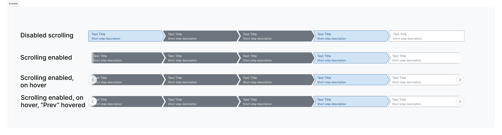
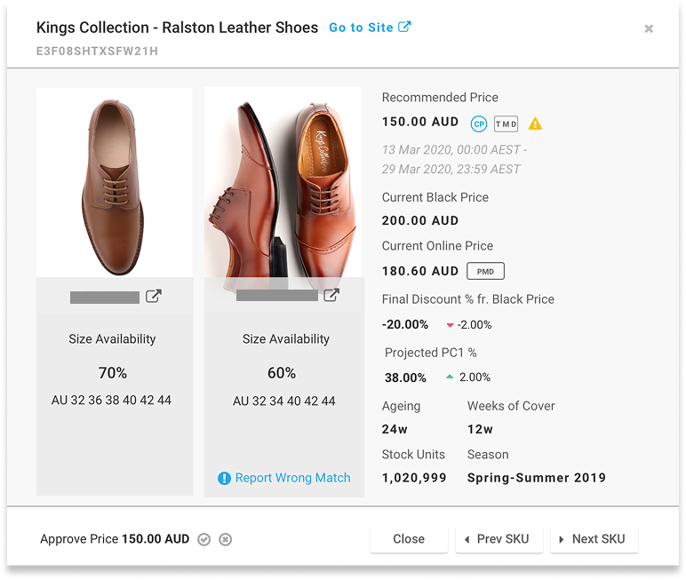

Colette Fung
Grounded in psychology and information systems, I lead design from problem to delivery, aligning stakeholders and driving measurable impact.
Curiosity as a career strategy
I am a curious learner at heart, and that curiosity has shaped the way I have built my career. My bachelor's degree in Psychology gave me a strong foundation in research methods and understanding human behaviour, which has translated naturally into UX research throughout my work.
As AI continues to reshape our field, I felt the pull to look beyond design and went back to the classroom. I recently completed my Master of Science in Information Systems at Nanyang Technological University, pursued part-time alongside my full-time design role.
Rather than choosing electives closer to my existing strengths, I took on more technical ones, including Python, Java and XML for mobile, SQL, and AWS. They stretched me, and gave me a much clearer sense of how IT systems interlace with one another.
The programme also reminded me that as AI tools grow more abundant, judgement and critical thinking are what set us apart. Knowing how the pieces fit together is what equips me to synthesise the noise, weigh the trade-offs, and make sound design decisions in this evolving landscape.
When I am not designing, you will probably find me on a hiking trail or planning my next trip. My hiking journey started with Mount Kinabalu, and two years later I made it up Mount Fuji at sunrise. These days, I keep the habit alive with occasional hikes around Malaysia and Hong Kong.
Case Studies

Bridging two teams with split ownership of a citizen-facing page, extending validation to mobile, and producing a cross-team endorsed layout pattern.

Stewarding a product team's proposal through design system governance, extending it into a responsive, documented, reusable system asset.

Designing a B2B product inspection tool for fashion e-commerce operations teams across Southeast Asia and Australia.
Qualifications
Education
-
2024 – 2026
Master of Science in Information SystemsNanyang Technological University, Singapore · Part-timeExpected Jun 2026
-
Aug 2025
UX CertificateNielsen Norman Group · Certificate ID1076703
-
2003 – 2006
Bachelor of Social Sciences, PsychologyThe University of Hong Kong · Full-time
-
2007
Diploma in Multimedia Graphic DesignHong Kong Productivity Council · Part-time
Design-related Work History
-
Apr 2023 – Present
Senior UX DesignerHousing and Development Board (HDB), Singapore
UX design and design systems governance for citizen-facing portals and e-services at Singapore's public housing authority. Sole owner of the internal design system; leading BTO journey UX since early 2026.
-
Apr 2019 – Oct 2022
UX DesignerGlobal Fashion Group (GFG), Singapore
Product design for B2B e-commerce platforms (ZALORA, THE ICONIC, Dafiti, Lamoda) across Malaysia, Singapore, Thailand and Australia markets. End-to-end UX from discovery to delivery in an Agile environment.
-
Apr 2013 – Apr 2019
Web BuilderCarlson Wagonlit Singapore (CWT)
Front-end web design for corporate event websites and attendee management platforms, serving international clients including Hewlett-Packard across Asia Pacific and Japan.
Languages
- English Fluent
- Mandarin Fluent
- Cantonese Native